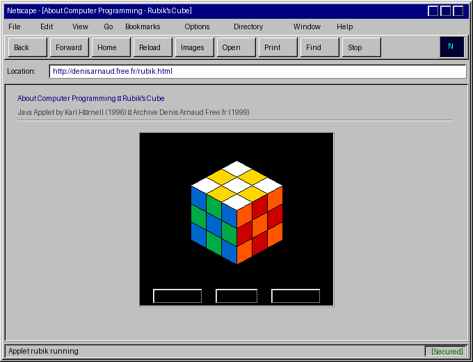

« About Computer Programming » — Applet Java Rubik Unbound programmée en 1996 par le développeur suédois Karl Hörnell (site Java on the Brain), sélectionnée dans le recueil de référence « Java-SIG's 100 Best Applets » (1997) et adaptée par le champion Lars Petrus pour son célèbre tutoriel de speedcubing.
Cette page et son bytecode Java (rubik.class) étaient hébergés sur le compte Free.fr de Denis Arnaud depuis le 24 octobre 1999.

Reconstitution fidèle de l'affichage Web 1.0 de l'applet exécutée dans la machine virtuelle Java HotJava / Netscape.
Bannière historique FFII d'époque (2005) :